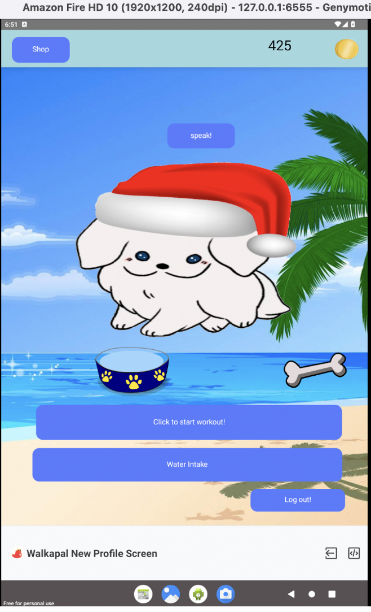

With Walk a Pal, kids can pick a virtual puppy they want to care for.
To buy their puppy toys, food, or even just fun hats, they need virtual coins.
Here's the catch! To gain these virtual coins, users need to get active!
With our walk tracking feature, users gain coins in the virtual world as they walk through the real world.
